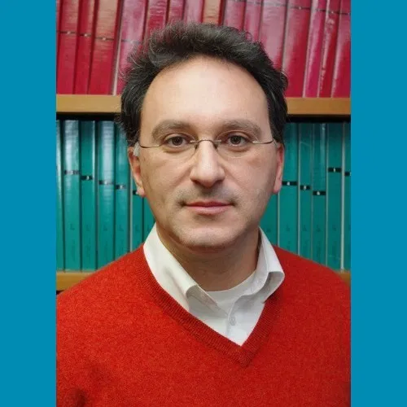
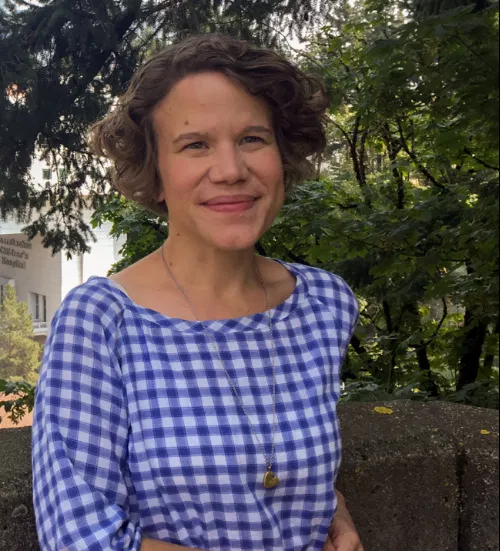
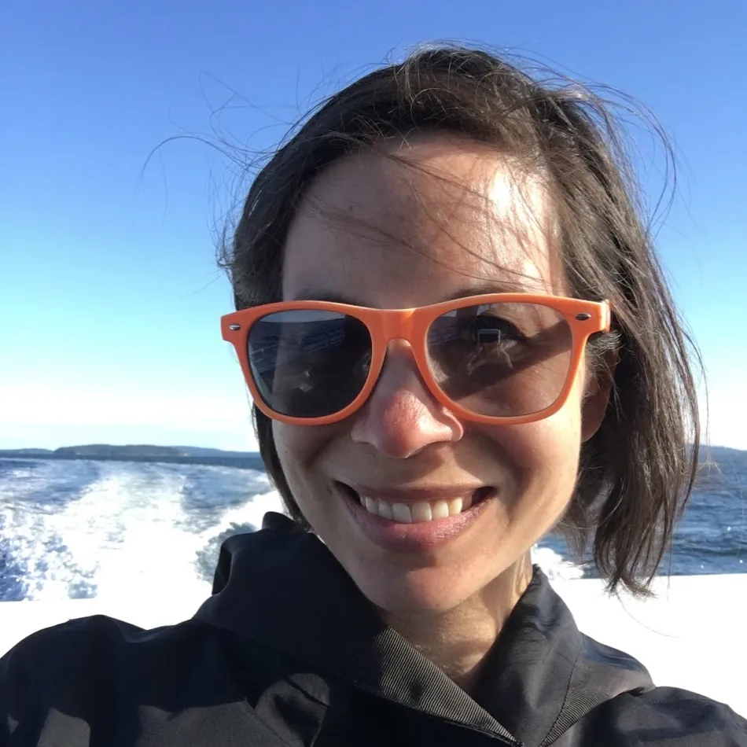
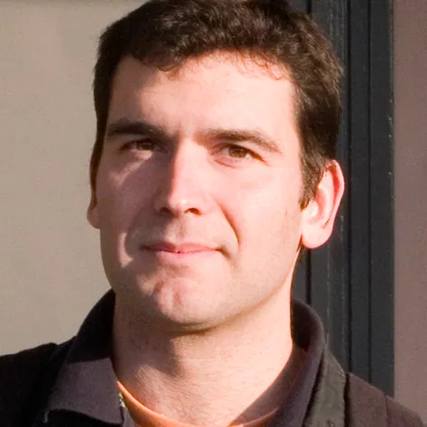
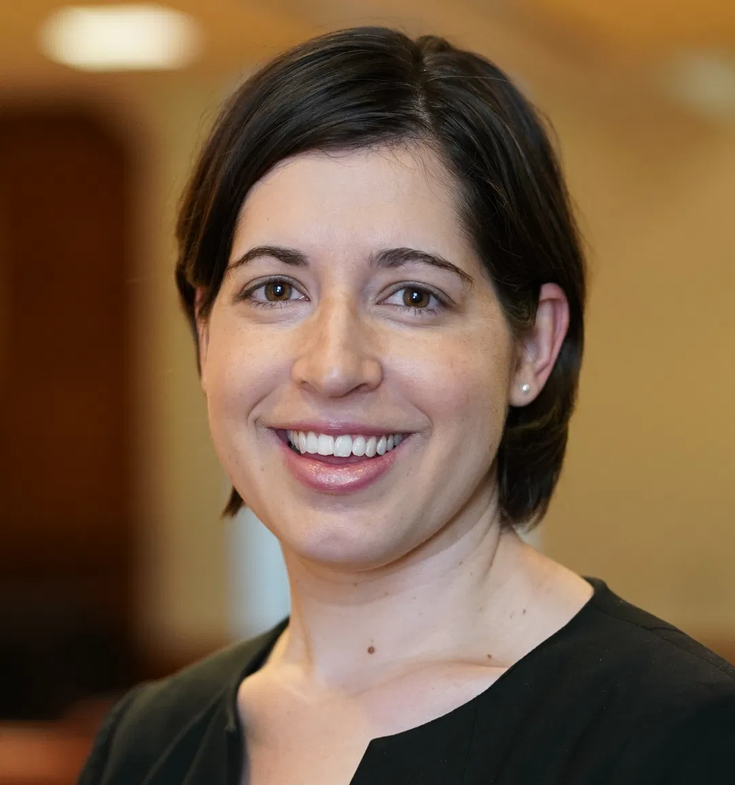
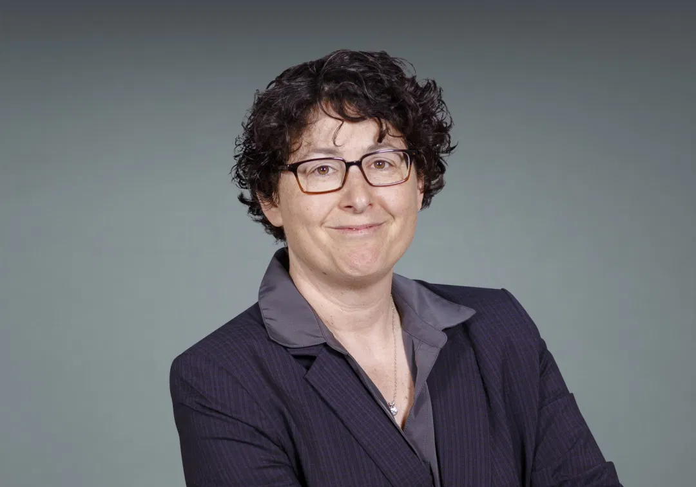

The Metrics Toolkit Editorial Board is comprised of scientometrics experts well versed in research impact metrics and their real-world applications. Editors make a one-year commitment to maintain and develop new Toolkit content by staying abreast of the relevant literature and joining monthly Editorial Board calls. In collaboration with the Toolkit’s co-founders, Editorial Board members work to ensure the Metrics Toolkit provides current and evidence driven information about research metrics.
|  | Manolis Antonoyiannakis is an Associate Editor and Bibliostatistics Analyst at the American Physical Society, and an Adjunct Associate Research Scientist at the Department of Applied Physics & Applied Mathematics at Columbia University. He received his PhD in physics from Imperial College London. Manolis has extensive experience on scholarly publishing and research assessment, having handled the peer review of more than 10,000 manuscripts in the Physical Review journals. He is interested in the science of science, information science, and scientometrics. More specifically, he is interested in how data science can be used to study scientific productivity, creativity, behavior, and impact, and he is keen to contribute toward a more sensible use of scholarly metrics that is anchored on solid statistical grounds. |
|  | Robin Champieux is the Director of Education, Research and Clinical Outreach at Oregon Health Sciences University, where she leads the Library’s scholarly communication and research data services. Her work and research is focused on enabling the creation, reproducibility, accessibility, and impact of digital scientific materials. She is a co-founder of the Metrics Toolkit and Awesome Libraries. Robin was a 2018 NLM/AAHSL Leadership Fellow, and is a graduate of the Harvard Leadership Institute for Academic Librarians. You can find Robin on Twitter or Github. |
|  | Robin Chin Roemer is the Head of Instructional Design & Outreach Services at the University of Washington Libraries in Seattle. She is the author of numerous works related to research impact, including the 2015 handbook Meaningful Metrics: A 21st Century Librarian’s Guide to Research Impact, Bibliometrics, and Altmetrics (ACRL Press). |
| Heather Coates is the Digital Scholarship & Data Management Librarian in the IUPUI University Library, Interim Co-Director of the Center for Digital Scholarship, and a co-founder of the Metrics Toolkit. In her work, Heather supports open dissemination of scholarship in many forms and the responsible use of research metrics as evidence for career advancement. Heather’s research interests include open science, open data, and open access as a means to improve the integrity of the scholarly record and advance our understanding of the world. You can find Heather on Twitter, Github, ORCID, or coateshl.com. | |
|  | Rodrigo Costas is a senior researcher at the Centre for Science and Technology Studies (CWTS) at Leiden University, and an Extraordinary Associate Professor at the Centre for Research on Evaluation, Science and Technology (CREST) of Stellenbosch University. His areas of expertise include the fields of information science, scientometrics, and social media metrics. At CWTS he leads research in ‘altmetrics’, focused on developing new approaches to studying the interactions between social media and science. Rodrigo’s interests also include the development of advanced scientometric studies of individual scholars and the study of funding acknowledgments as a new source of scientometric data. He holds a PhD in Library and Information Science. |
|  | Karen Gutzman is the Digital Innovations Specialist at Galter Health Sciences Library & Learning Center at Northwestern University, where she supports and implements programs that increase awareness about digital scholarship and issues in the digital environment among faculty, researchers, and students at Feinberg School of Medicine. Previously, Karen was the Impact and Evaluation Librarian where she supported the understanding, assessment, visualization, and reporting of impactful outcomes of research and clinical care efforts. Karen is particularly interested in using information visualization to facilitate stronger comprehension of data in the assessment process. She keeps an updated collection of her works in DigitalHub , the institutional repository for Northwestern Medicine. |
| Stacy Konkiel is the Director of Research Relations at Altmetric and Dimensions, and a co-founder of the Metrics Toolkit. Stacy’s research interests include incentives systems in academia and informetrics, and she has written and presented widely about altmetrics, Open Science, and library services. Stacy was a co-founder of the HuMetricsHSS initiative. Previously, Stacy worked with teams at Impactstory, Indiana University & PLOS. You can learn more about Stacy at stacykonkiel.org or on Github. | |
| Barbara S. Lancho Barrantes is a Bibliometrician leading the Bibliometrics service at the University of Leeds. She has a PhD in Bibliometrics developed within the SCImago research group. In her previous role she has been a Postdoctoral researcher in Scientometrics at Tecnologico de Monterrey (Mexico). Her scientific production mainly focuses on citation flows among countries and disciplines. She has published in journals and participated in conferences in the bibliometrics area. Recently she has joined the LIS-Bibliometrics committee as a Competencies Development Officer and to the Innovative Metrics Working Group – LIBER. | |
| Maria Manuel Borges is an Associate Professor in Information Science at the University of Coimbra and co-coordinator of the Digital Humanities Group at the Centre for 20th Century Interdisciplinary Studies – CEIS20 of the University of Coimbra. She is also a member of the editorial board of national and international journals and Associate Editor of the Directory of Open Access Journals (DOAJ). She is a member of the Interministerial Working Group, sub-group Research Assessment, whose mission is, among others, to advise the Portuguese Ministry of Science, Technology and Higher Education about the strategic orientation for the National Open Science initiative. She is also a member of the Research Data Alliance and a member of the board supported by the University of Coimbra of the node RDA.pt. | |
|  | Alisa Surkis is the Assistant Director for Research Data and Metrics and Vice Chair for Research at the NYU Health Sciences Library. She leads efforts at NYU Langone Health to track and assess the impact of publications, including supporting a database of faculty publications and leading a redesign for institutional bibliometrics dashboards. Her team provides custom reports and has developed a tool for self-service reports on the impact, topic, and collaborations of publications for individuals, research teams, departments, and the institution. Her team also maintains an institutional data catalog, and serves as a locus for education on collecting, managing, analyzing, visualizing, and sharing data. Alisa’s interests include assessing the research impact of data sharing and assessing the translation of research through publications. |
| Rebecca Welzenbach is the Research Impact Librarian at the University of Michigan Library, where she helps scholars communicate the importance of their work and coordinates the library’s role in research impact activities on campus. Prior to that, she contributed to developing and sustaining U-M Library’s open access publishing and digital scholarship initiatives in a variety of roles. She earned her MSI from the University of Michigan School of Information in 2009. | |
| Zohreh Zahedi (ORCID ID: https://orcid.org/0000-0001-5801-1886 ) is a visiting researcher at the Centre for Science and Technology Studies (CWTS) of Leiden University in the Netherlands. She obtained her PhD degree from CWTS, Leiden University. Her PhD thesis centers around the value of using social media metrics (altmetrics) for research evaluation. Zohreh’s current research line focuses on studying the interactions and communications between social media users and contents shared on social media platforms. Beside doing research, she is interested in understanding how research metrics could inform policy making and what are the best practices that could inform responsible use of research metrics in research assessments. Zohreh has contributed to the development of the US National Information Standard Organization code of conduct for altmetrics data. She is part of the editorial board of Journal of Altmetrics. |
Past Metrics Toolkit Board Members
Isidro F. Aguillo is the head of the Cybermetrics Lab, at the Institute de Public Goods and Policies (IPP) of the Spanish National Research Council (CSIC). He is the editor of the Rankings Web (Webometrics) and is the founder and editor of the journal “Cybermetrics”. Isidro served on the Metrics Toolkit’s inaugural board, 2018-2019.
Andréa Gonçalves do Nascimento is a librarian and independent consultant in scholarly publishing and academic impact. She is the author of the book “Altmetrics for librarians: practical guide to alternative metrics for the assessment of scientific output”. Andréa served on the Metrics Toolkit’s inaugural board, 2018-2019.